Latest version of the booking system operation manual
Login system
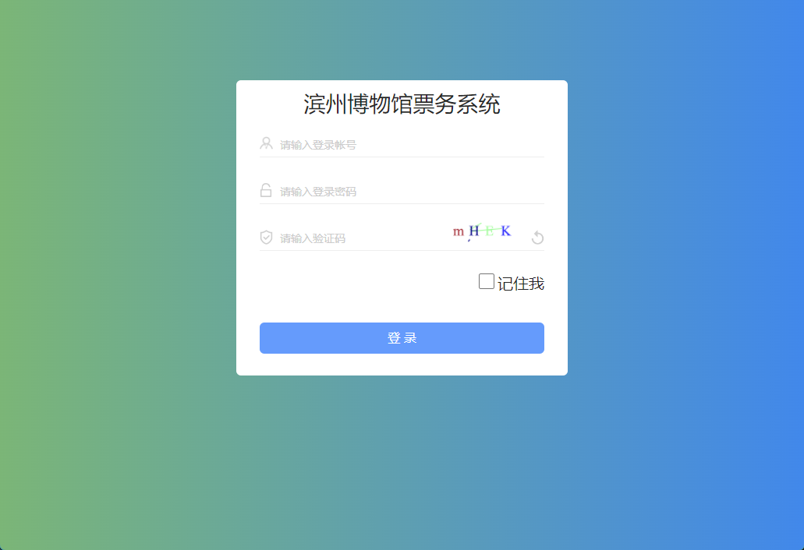
System Management - Log View (all records left on the operating system)
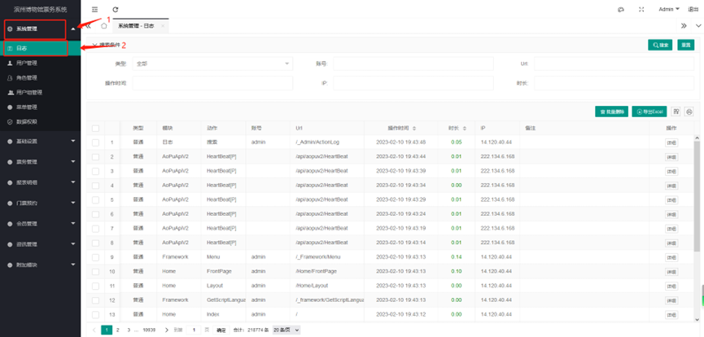
User Management
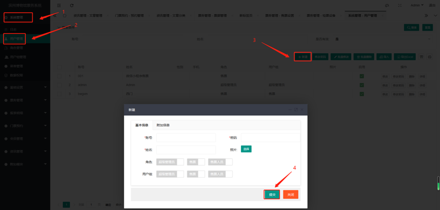
- Open System Management
- Open User Management
Click New
- Account: The account for logging in to the system (English, numbers, symbols)
- Password: Set the password
- Name: The name of the user of this account
- Role: What role is this account authorized to be
- User group: What is the user group of this account
Submit after editing
Role management
Role management: Role management means that the user is assigned to this role. In this role, the visible pages and operation permissions are set. After logging in to the system through this user, the user can see the pages and operable permission functions that you have authorized to display.
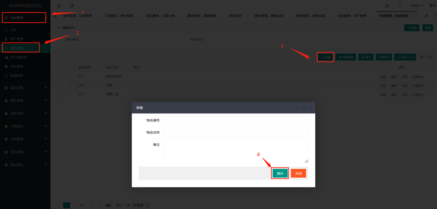
- Open System Management
- Open Role Management
New
- Role number: You can number it at will but it cannot be repeated (numbers, English, symbols), it is only for recording purposes;
- Role name: What is the name of this new role? (For example, if you can operate group reservations, you can name it: Group Reservation);
- Remarks: Remarks, instructions, etc. for this new role.
Set the page permissions of the role 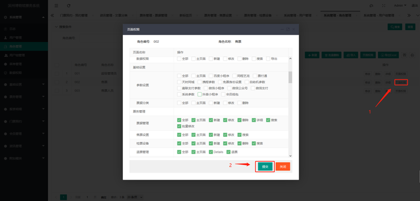
- Find the corresponding role - page permissions; this is to set the pages that the role can see and the operations that can be performed after logging in to the system; check it to be visible and operable; if it is not checked, it is not visible and not operable
- Submit after editing
User group management
Create user group
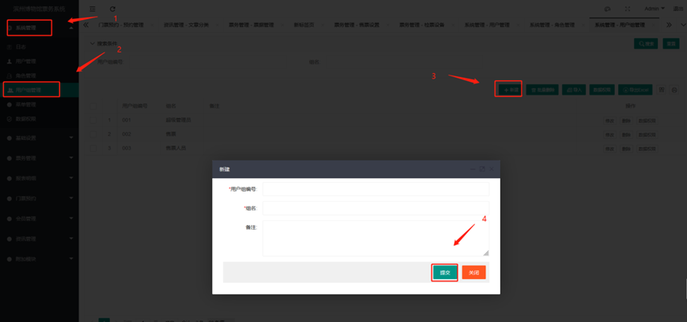
- User group number: number setting, for marking function;
- Group name: What is the name of this new group?
- Remarks: Special remarks for this group;
- Submit;
User group data permission settings
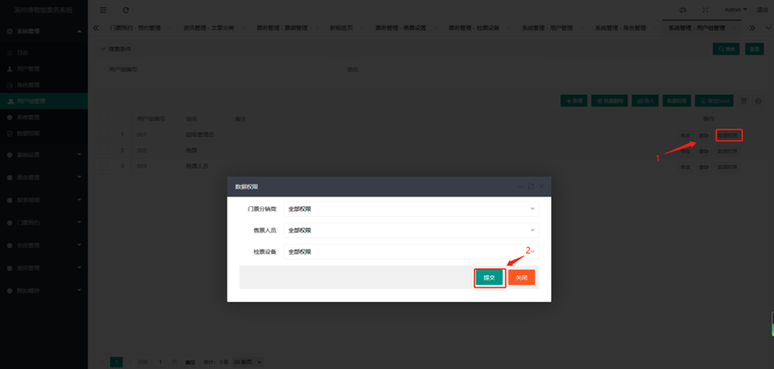 Find the corresponding group - click data permissions
- Ticket distributor: The reservation system does not use this function, it can be relaxed, and there is no other impact
- Ticket seller: All permissions need to be set, which is for ticket sales and viewing data
- Ticket checking equipment: All permissions need to be set, which is required for viewing ticket checking data
- Submit
Set the user group of the user
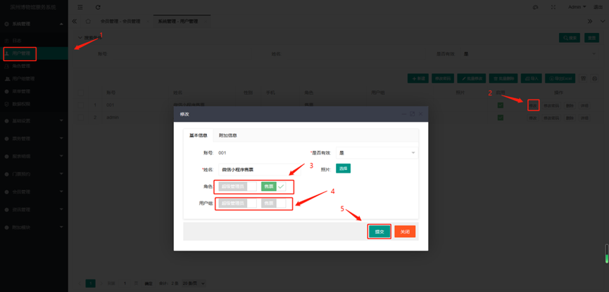
Menu management settings
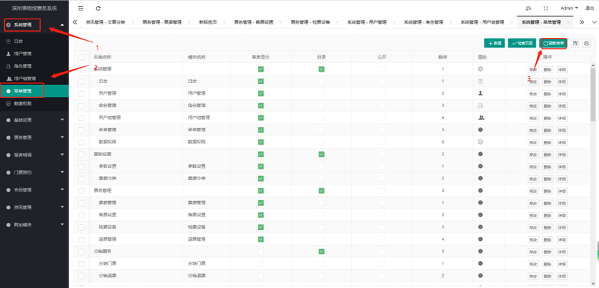
Menu management is the setting of the left menu bar. We have already set it all up, so we don't need to move it. If you don't know how to set it, you can contact customer service and let our customer service guide you. After modification, you need to refresh the menu and log in again to take effect
Data permission management
Data permissions: Data permissions correspond to data, including distributor data, ticket checking data, and ticket seller data. You can only see the corresponding data after setting the permissions.

- Click the left menu - System Management;
- Click the left menu - Data Permissions;
Click New;
- Permission category: generally set user group permissions,
- Permission name: What is the name; (for example, the platform administrator needs to view all data permissions, so give him all permissions);
- All permissions: Yes/No;
- User group: select a user group for authorization;
Submit;
New personal reservation ticket
- New personal reservation ticket
- Basic parameters
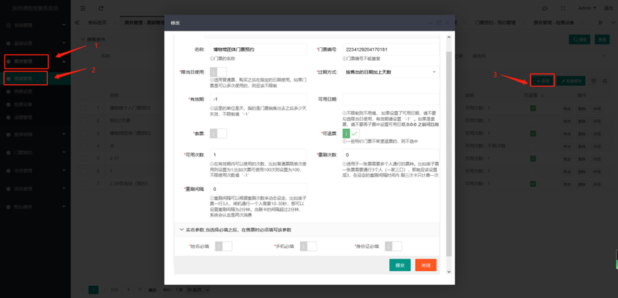
- Name: The name of the ticket (the name of the personal reservation ticket.
- Ticket number: The number of each ticket is different
- For use on the same day: This function is not applicable to ticket reservations
- Expiration method: This function is not applicable to ticket reservations
- Validity period: The validity period can be determined according to the use time of the ticket, without restriction
- Basic parameters
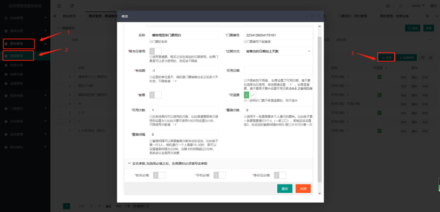